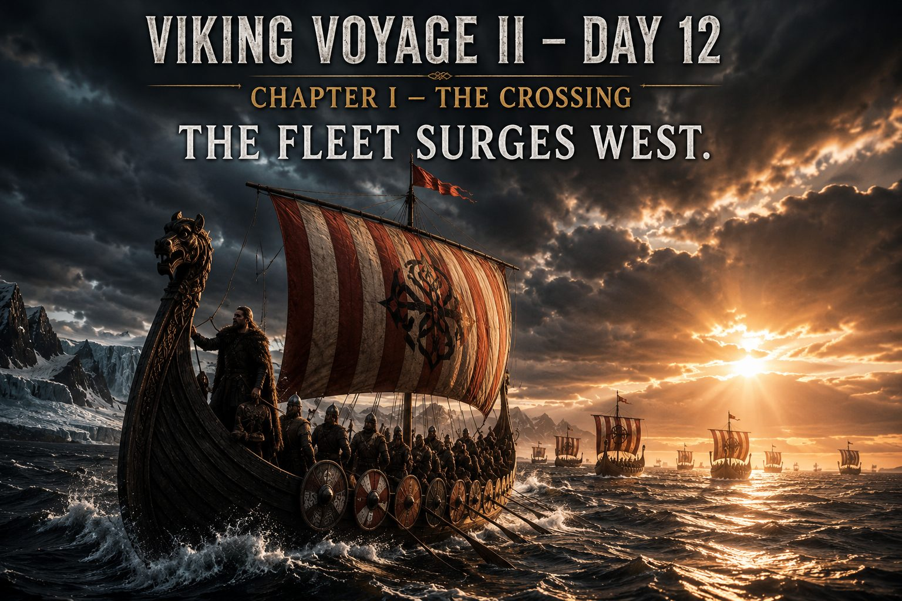
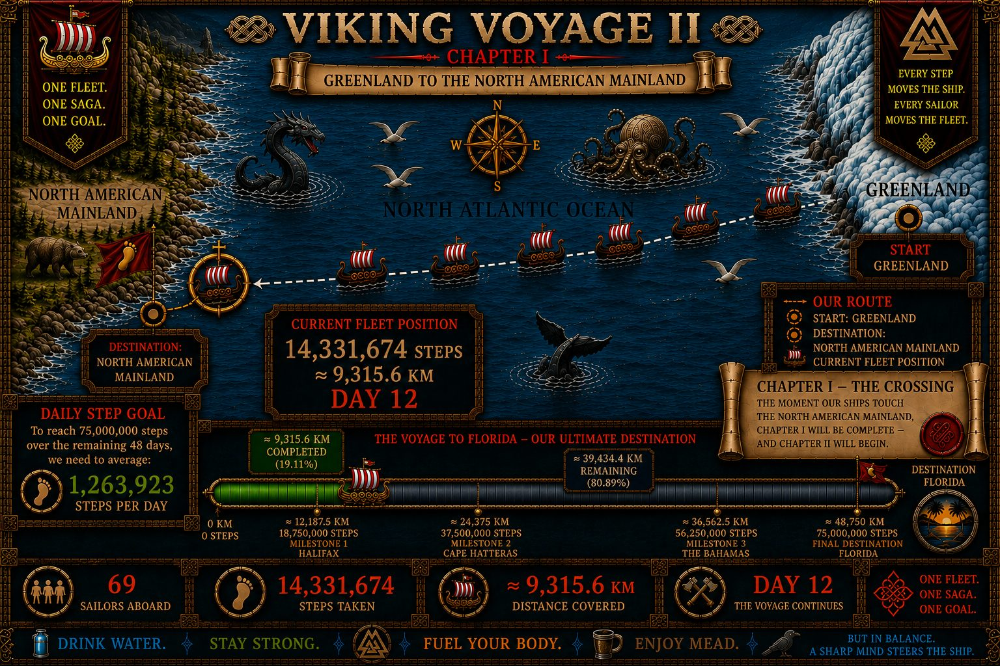
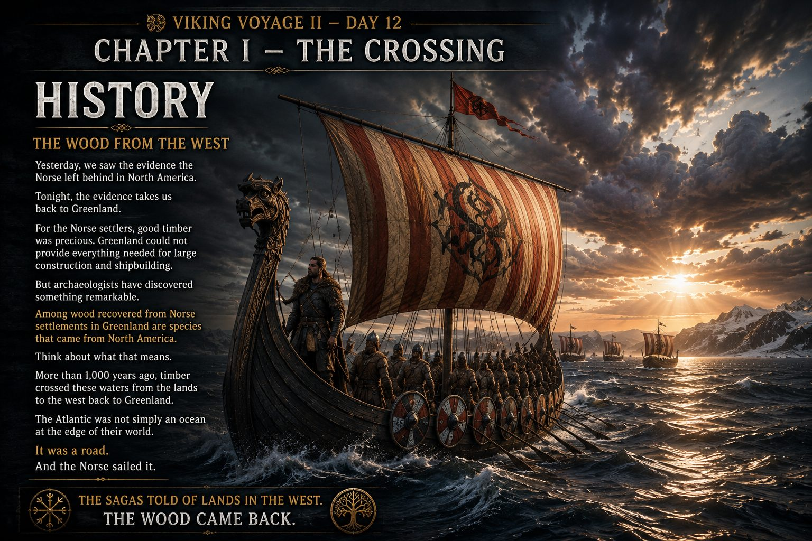
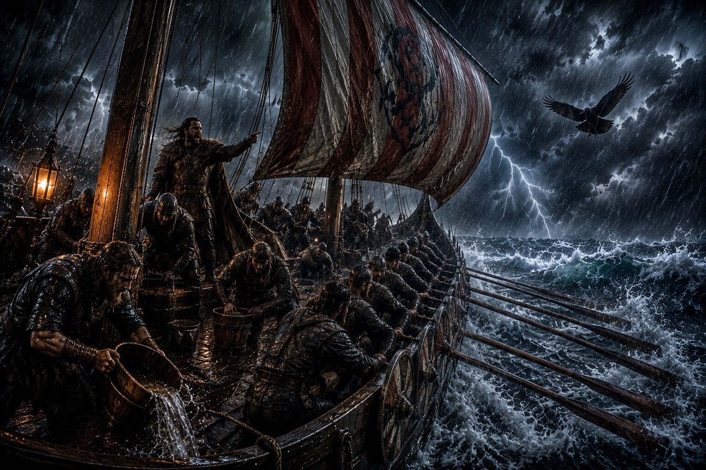
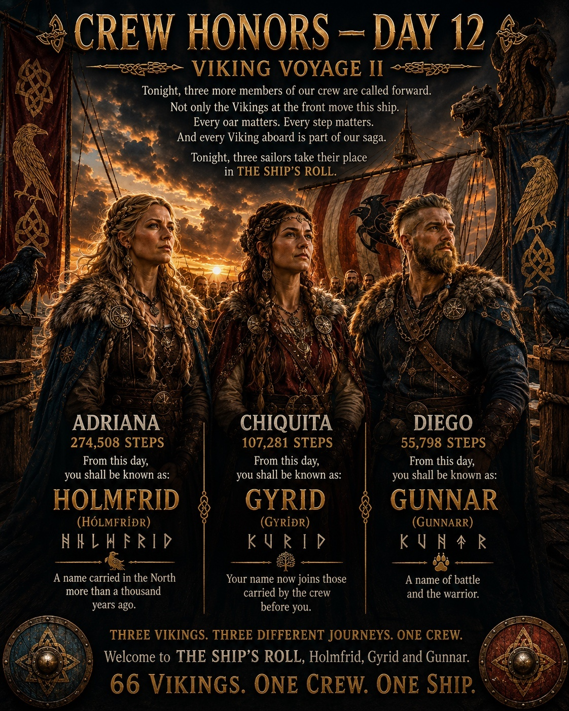
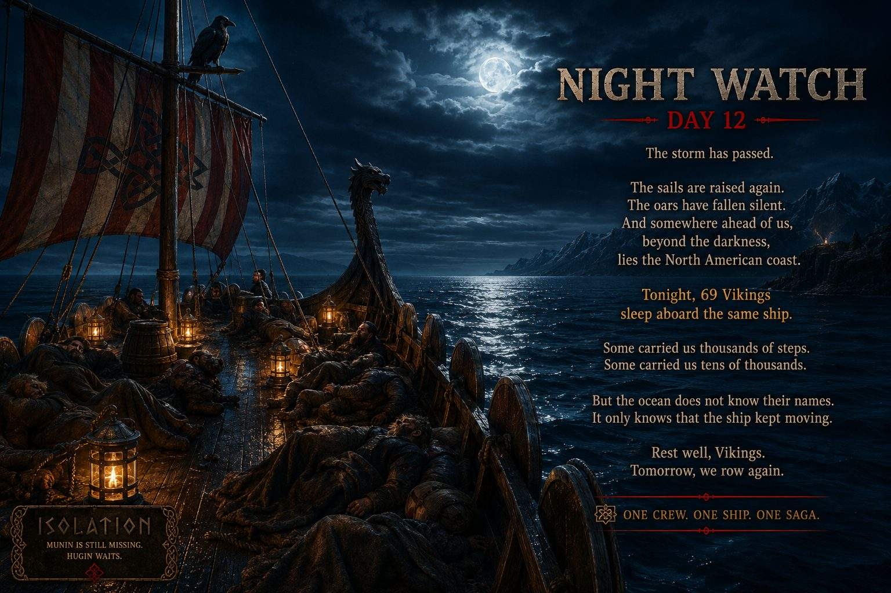

THE FLEET SURGES WEST
Real activity in Pacer moves the ship. These are the latest verified numbers from our crew.


The storm has broken. One raven has returned. The other has not.
THE OCEAN IS LOSING GROUND
69 Vikings have carried the fleet to 14,331,674 steps — approximately 9,315.6 km since Greenland.
During Day 12 alone, the crew added 1,764,301 steps — approximately 1,146.8 km. The previous target was 1,274,135 steps, so the fleet finished 490,166 steps above target.
With 48 days remaining after Day 12, the required pace is now approximately 1,263,923 steps per day.
69 VIKINGS. ONE CREW. ONE SHIP.
GREENLAND ➜ FLORIDA

CHAPTER I — THE CROSSING
The fleet has sailed 14,331,674 steps — approximately 9,315.6 km — from Greenland toward the North American mainland. 19.11% of the 75,000,000-step voyage is complete.
60,668,326 steps — approximately 39,434.4 km — remain before Florida. Chapter I ends only when the ships reach the North American mainland.

THE VOYAGE BECOMES A LIVING SAGA
HISTORY
Verified history and archaeology guide the places, people and events we encounter along the route.
MYTH & SAGA
The gods, ravens and stories of the Norse world give the crossing its mythic voice.
OUR SAGA
The crew's real steps decide the pace, the weather and the next chapter of the voyage.
THE WOOD FROM THE WEST
For the Norse settlers in Greenland, good timber was precious. Greenland could not provide everything needed for large construction and shipbuilding.
Archaeological research into wood recovered from Norse Greenland has identified imported timber, including species originating in North America. The evidence shows that timber crossed these waters from lands to the west back to Greenland.
The Atlantic was not simply an ocean at the edge of their world. It was a road — and the Norse sailed it.
THE SAGAS TOLD OF LANDS IN THE WEST. THE WOOD CAME BACK.
THE SAGA MAY BE WILD. THE HISTORY MUST BE TRUE.

THE STORM BREAKS
The black wall reaches the fleet. The North Atlantic explodes. Rain tears across the deck and waves rise around the ship as 69 Vikings fight to keep the dragon facing the sea.
Hour after hour, the crew fights. Not against another army — against the Atlantic itself. But the Vikings do not break.
Then Hugin appears above the storm. He circles once and turns west. Captain Hákon gives the order: FOLLOW HIM.
The oars bite into black water. The dragon begins to move — not away from the storm, but through it.
THE NORTH ATLANTIC CAME FOR US. IT DID NOT TAKE US.
TO BE CONTINUED…

THREE MORE NAMES ENTER THE SHIP'S ROLL
EVERY OAR MATTERS
Crew Honors belongs to OUR SAGA. It is a Viking Voyage II tradition, not a claimed reconstruction of a documented Viking Age ceremony.
Once entered into THE SHIP'S ROLL, the name remains with that sailor for the rest of the voyage.

NAMES CARRIED ABOARD
Permanent pairings verified in the current working register. Entries still under historical review are not presented here as final.
THE STORM HAS PASSED
The sails are raised again. The oars have fallen silent. Somewhere ahead, beyond the darkness, lies the North American coast.
Tonight, 69 Vikings sleep aboard the same ship. Some carried us thousands of steps. Some carried us tens of thousands. The ocean does not know their names. It only knows that the ship kept moving.
HUGIN WAITS. MUNIN IS STILL MISSING.
REST WELL, VIKINGS. TOMORROW, WE ROW AGAIN.

DAY 11 — BEFORE THE STORM
The previous day's visual record remains aboard as part of the voyage archive. Tap any picture to enlarge it.


POWERED BY OUR CREW
Viking Voyage II is a community step challenge whose voyage is driven by real activity recorded by participants in the Pacer app. Pacer is the platform used by our crew; Nordic Viking Heritage and Viking Voyage II are an independent community project.
THE HISTORY MUST BE TRUE
Historical material is kept separate from OUR SAGA and checked against archaeological and scholarly sources. Day 12's timber section draws on research published in Antiquity on timber imports to Norse Greenland, including wood originating in North America.
ANTIQUITY — TIMBER IMPORTS TO NORSE GREENLAND
ISOF — NORDISKT RUNNAMNSLEXIKON
“Every step counts.
Every Viking matters.”